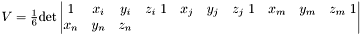

Go to the source code of this file.
Functions/Subroutines | |
| subroutine | tetra4 (d, ul, displ, xl, ql, s, p, shp, xsja, deltat, tweight, isw) |
| Calculates local stiffness matrix and load vector for a poroelastic element. | |
| subroutine | flux (d, ul, xl, ql, shp) |
| Calculates fluid velocity at an element. | |
| subroutine | shape (xl, shp, xsja) |
| Calculates linear shape functions and their derivatives for a tetrahedron element. | |
| subroutine flux | ( | d | , | |
| ul | , | |||
| xl | , | |||
| ql | , | |||
| shp | ||||
| ) |
Calculates fluid velocity at an element.
In case fluid velocities are needed for the transport equation, "flux" calculate the velocity after the solver returned the pore pressure at each node.
| [in] | Pore | pressure at 4 nodes (ul) and permeability |
| [out] | Darcy | velocity vector |
Definition at line 190 of file tetra4.f90.
References diffusion_data::d, diffusion_data::s, diffusion_data::ul, and diffusion_data::xl.
Referenced by diffusion().
| subroutine shape | ( | xl | , | |
| shp | , | |||
| xsja | ||||
| ) |
Calculates linear shape functions and their derivatives for a tetrahedron element.
Uses coordinates to calculate determinant (volume/6) and shape functions

| [in] | Coordinates | of the nodes of the tetrahedron (xl) |
| [out] | Shape | functions (shp(4,i)) and their derivatives (shp(1-3,i)) |
Definition at line 234 of file tetra4.f90.
References diffusion_data::xl.
Referenced by diffusion().

| subroutine tetra4 | ( | d | , | |
| ul | , | |||
| displ | , | |||
| xl | , | |||
| ql | , | |||
| s | , | |||
| p | , | |||
| shp | , | |||
| xsja | , | |||
| deltat | , | |||
| tweight | , | |||
| isw | ||||
| ) |
Calculates local stiffness matrix and load vector for a poroelastic element.
Uses tetrahedron geometry and linear shape function. The derivatives of the displacemnts are used as source term for fluid with the matrix L Transpose. This subroutine is called first to compute the load vector, then it is called for the second time to compute the stiffnes matrix.
| [in] | Pore | pressure at 4 nodes (ul) and displacements (displ) of previous time step, material properties (D), and timestep (deltat). |
| [out] | Local | stiffness matrix and load vector of one element. |
Definition at line 49 of file tetra4.f90.
References diffusion_data::d, diffusion_data::displ, diffusion_data::p, diffusion_data::s, diffusion_data::ul, and diffusion_data::xl.
Referenced by diffusion().
 1.6.1
1.6.1